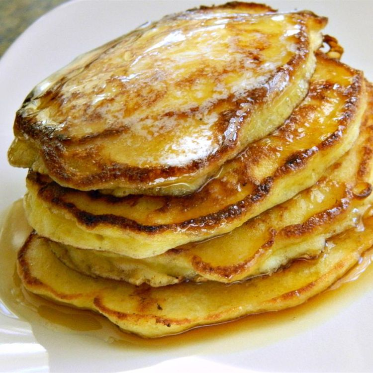

Simple Cottage Cheese Pancakes

Delicious and healthy pancakes that are as easy to make as they are good for you!
Ingredients
- 1 cup cottage cheese
- 3 eggs
- 1/4 cup all-purpose flour
- 2 tablespoons melted butter
- 1/4 teaspoon salt
- 1 teaspoon butter, or as needed
- 1/4 cup blueberries, or to taste (Optional)
Directions
- Strain cottage cheese in a sieve fitted over a bowl, pressing down occasionally, until cottage cheese has dried out, about 1 hour.
- Beat eggs in a medium bowl, add cottage cheese, flour, melted butter, and salt. Mix until just blended.
- Heat butter in a frying pan over medium-high heat, drop large spoonfuls of batter into the melted butter. Sprinkle blueberries into batter. Cook until lightly browned, 2 to 3 minutes per side.
Back to Home